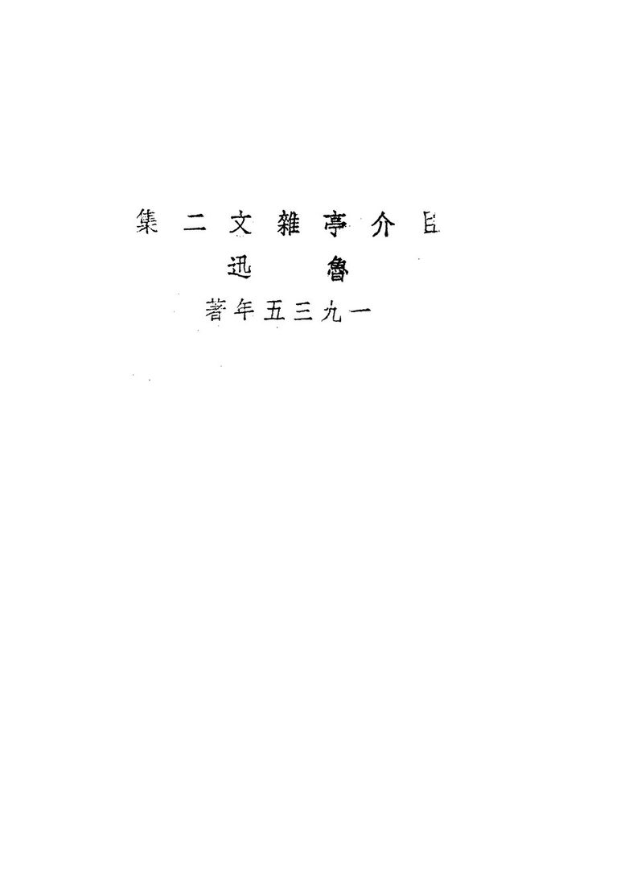
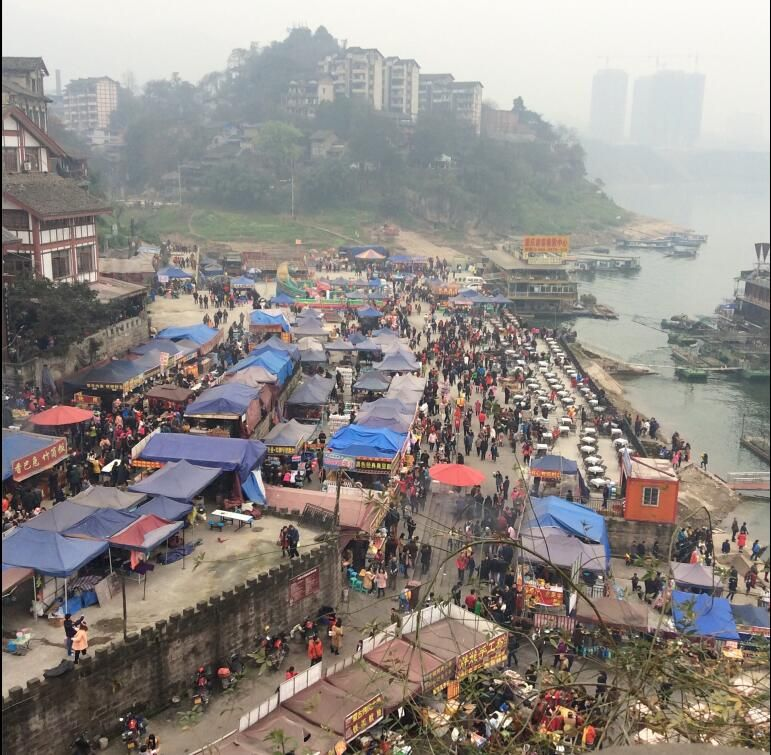

先看结论
- 重庆适合的玩法
- 必去优先级
- 平台高频玩法
- 游玩原则
快速决策索引
全年月份速查
季节限定景观
景点营业时间和票价速查
-
使用说明
- 以下为常见开放时间和成人基础票价，节假日、夜场、演出、索道、游船、特展会调整
- 免费不等于免预约，三峡博物馆、动物园、红岩线等热门点建议提前预约
- 开放式街区、商圈、夜市和江边机位以公共空间为主，店铺和摊位按各自营业为准
-
解放碑和洪崖洞片区
- 解放碑开放式地标，全天可逛，免费
- 八一好吃街开放式小吃街，全天可逛，摊位和店铺以各自营业为准，免费进入
- 洪崖洞常见 9:00-23:00，开放式商业风貌区，免费；灯光时间以当日公告为准
- 千厮门大桥开放式桥梁人行/观景空间，免费；节假日可能临时管控
- 大剧院江滩/洪崖洞对岸机位开放式江岸，免费；注意夜间安全
- 保定门及城墙开放式历史城墙/观景点，免费或以现场公告为准
- 来福士商业综合体，商场多为 10:00-22:00 左右；观景/展览/餐饮另计
- 云端之眼常见 9:30-22:00 左右，成人票常见 60-80 元区间，优惠票和套票以官方购票页为准
-
渝中半岛山城 Citywalk
- 山城步道开放式步道，全天可走，免费；夜间注意台阶和安全
- 十八梯开放式传统风貌区，全天可逛，免费；店铺按各自营业
- 白象居居民楼外部公共空间为主，免费；注意不打扰居民，不进入私人区域
- 湖广会馆常见 9:00-18:00，17:00 停止入馆，成人票常见 25 元左右；演艺/盖碗茶套票另计
- 长江索道常见 8:00-22:00，单程常见 30 元、往返常见 50 元；节假日延时或排号以官方为准
- 两江小渡船班、码头、票价随运营调整，朝天门至弹子石等线路以官方购票页为准
- 人民大礼堂外景免费；入内参观常见成人票 10 元左右，开放和演出以公告为准
- 重庆中国三峡博物馆常见 9:00-17:00，周一闭馆，免费预约；特展可能收费
-
李子坝/鹅岭/大坪/九龙坡
- 李子坝轻轨穿楼观景平台开放式观景平台，免费；轨道交通按正常票价
- 鹅岭公园开放式公园，通常免费，开放时间以现场公告为准
- 鹅岭二厂开放式文创街区，免费；店铺、展览按各自营业/收费
- 大坪时代天街商场多为 10:00-22:00 左右，免费进入
- 万象城商场多为 10:00-22:00 左右，免费进入
- 涂鸦一条街/黄桷坪开放式街区，免费；注意居民生活和交通
- 四川美术学院黄桷坪校区校园开放规则以学校当日管理为准，涂鸦街外部免费
- 交通茶馆营业时间和消费以门店当日公告为准，通常按茶水消费
- 重庆动物园常见 9:00-17:00，16:30 停止入园，成人票常见 25 元左右；熊猫馆开放以园区公告为准
-
观音桥/江北/鸿恩寺
- 观音桥步行街开放式商圈，全天可逛，免费；商场和店铺按各自营业
- 观音桥好吃街开放式小吃街，免费进入；摊位和店铺按各自营业
- 北仓文创园开放式文创街区，免费；店铺、展览按各自营业/收费
- 九街开放式夜生活街区，免费；酒吧、餐厅按各自营业
- 鸿恩寺森林公园开放式公园，通常免费；夜景亮灯和开放以现场公告为准
- 北滨路开放式江岸，免费
-
南岸/南山
- 龙门浩老街开放式传统风貌区，免费；店铺按各自营业
- 弹子石老街开放式街区，免费；店铺和观景平台按各自营业
- 南滨路开放式滨江路，免费；餐饮按各店营业
- 南滨路钟鼓广场开放式打卡点，免费
- 南山一棵树常见 9:00-22:30，成人票常见 30 元左右
- 壹华里夜景公园常见免费开放，游乐/拍照项目按现场收费
- 黄桷垭老街开放式老街，免费；店铺按各自营业
- 南山植物园常见 9:00-17:30，成人票常见 30 元左右；温室/展览另计
- 南山烧烤/南山有烧烤餐饮店铺，营业和预约按门店为准
-
沙坪坝/磁器口/歌乐山
- 磁器口古镇开放式古镇，全天可逛，免费；店铺按各自营业
- 渣滓洞常见 9:00-17:00，免费预约；以红岩官方公告为准
- 白公馆常见 9:00-17:00，免费预约；以红岩官方公告为准
- 歌乐山烈士陵园/红岩相关场馆常见 9:00-17:00，免费预约；周边景点开放以官方公告为准
- 熙街开放式商圈，免费；店铺按各自营业
-
远郊和周边
- 武隆天生三桥常见白天开放；旺季门票常见 70 元、淡季常见 40 元，景区交通另计
- 仙女山国家森林公园常见全天入园或白天项目运营；门票常见 50 元，观光小火车/滑雪另计
- 芙蓉洞门票常见旺季 80 元、淡季 65 元；开放以武隆景区公告为准
- 大足石刻开放和票价按宝顶山/北山等景区及淡旺季调整，宝顶山成人票常见 100 元左右，联票以官方为准
- 金佛山门票淡季常见 70 元、旺季常见 80 元，索道/巴士/滑雪另计
- 黑山谷门票、索道、电瓶车按景区公告，适合出发前单独核对
- 四面山门票、观光车、游船按景区公告，适合住一晚
- 酉阳桃花源门票和演出/游船按景区公告，适合两日以上
- 乌江画廊游船、码头、票价受季节和水位影响，以官方船班为准
行前准备
-
预约和核对
- 重庆中国三峡博物馆提前预约，常见提前数日放票
- 重庆动物园建议提前购票/预约，熊猫馆节假日早去
- 长江索道节假日先线上购票排号
- 红岩线渣滓洞、白公馆、红岩纪念馆通常免费但需预约
- 远郊景区武隆、大足、金佛山、黑山谷看当日开放、交通和天气
-
穿搭和装备
- 全年舒适防滑鞋，重庆台阶多
- 夏季防晒、补水、手持风扇，白天少暴走
- 冬季防湿冷外套，江边和山上更冷
- 雨天雨伞/雨衣、防滑鞋，山城步道台阶湿滑
- 夜景轻便外套，江边风大
-
交通原则
- 市区优先轨道交通，堵车时打车不一定快
- 解放碑/洪崖洞附近打车定位要精确，上下层道路容易错
- 山城步道、十八梯、白象居、龙门浩适合步行但费腿
- 南山、歌乐山、远郊适合打车/包车/自驾
- 节假日洪崖洞、磁器口、动物园、长江索道周边会临时管控
住宿建议
-
解放碑/洪崖洞/较场口
- 适合第一次来、想住核心区、夜景和吃喝方便
- 优点步行到解放碑、八一好吃街、洪崖洞、山城步道、十八梯都方便
- 缺点节假日贵且拥堵，洪崖洞附近夜间打车难
- 关键词解放碑、较场口、临江门、小什字、日月光中心
-
观音桥/江北
- 适合吃喝、商圈、夜生活、性价比
- 优点观音桥好吃街、北仓、九街近，住宿选择多
- 缺点离渝中核心景点需要轨道/打车
-
南滨路/南坪/弹子石
- 适合看夜景、住江景、情侣/慢游
- 优点看渝中半岛夜景方便，龙门浩、弹子石、南滨路顺路
- 缺点去解放碑需跨江，节假日过桥堵
-
沙坪坝/磁器口/三峡广场
- 适合磁器口、歌乐山、红岩线、重庆西站/沙坪坝站进出
- 优点价格相对友好，大学城和磁器口方向方便
- 缺点到解放碑和南滨路远
-
大坪/时代天街/石油路
- 适合想住中间位置、吃喝商场多、去动物园/涂鸦街方便
- 优点去渝中、九龙坡、动物园相对均衡
- 缺点旅游氛围不如解放碑
-
重庆北站/江北机场附近
- 适合晚到早走、交通中转
- 优点赶车省心
- 缺点旅行氛围弱，不适合连续住很多晚
地图分区
-
渝中半岛核心区
- 核心点解放碑、八一好吃街、洪崖洞、千厮门大桥、山城步道、十八梯、白象居、湖广会馆、长江索道、朝天门、来福士
- 玩法老城步道、夜景、索道、吃喝
- 适合第一次来重庆
-
李子坝/鹅岭/大坪/九龙坡
- 核心点李子坝、鹅岭公园、鹅岭二厂、重庆动物园、涂鸦一条街、交通茶馆、四川美术学院、万象城、大坪时代天街
- 玩法轻轨穿楼、文创拍照、熊猫、老茶馆、涂鸦
-
江北观音桥
- 核心点观音桥步行街、观音桥好吃街、北仓文创园、九街、鸿恩寺森林公园、北滨路
- 玩法吃喝、夜生活、文创、夜景
-
南岸南滨路/南山
- 核心点龙门浩老街、弹子石老街、南滨路、钟鼓广场、南山一棵树、壹华里、黄桷垭老街、南山烧烤
- 玩法江景、老街、夜景、日落、烧烤
-
沙坪坝/歌乐山
- 核心点磁器口、渣滓洞、白公馆、歌乐山烈士陵园、林中乐辣子鸡、熙街
- 玩法古镇、红色教育、辣子鸡、大学城
-
远郊山水区
- 核心点武隆、大足石刻、金佛山、黑山谷、四面山、酉阳桃花源、乌江画廊
- 玩法世界遗产、喀斯特、避暑、雪景、山水
核心景点
-
洪崖洞
- 最佳时间夜晚亮灯后，工作日更好
- 看点吊脚楼夜景、嘉陵江、千厮门大桥同框
- 玩法重点看外景，大剧院江滩和千厮门大桥拍照
- 搭配解放碑、八一好吃街、朝天门、来福士、白象居
- 值不值得专程第一次来值得，复刷看外景即可
- 提醒免费，不要买所谓快速通道
-
解放碑
- 最佳时间白天顺路，晚上商圈更热闹
- 看点重庆市中心地标、商圈、小吃
- 搭配八一好吃街、洪崖洞、十八梯、山城步道
- 值不值得专程第一次来值得，之后作为吃喝换乘点
-
山城步道
- 最佳时间上午或下午，雨天谨慎
- 看点山城台阶、老街巷、江景、悬崖步道
- 搭配十八梯、白象居、湖广会馆、解放碑
- 值不值得专程值得，是理解重庆地形的核心点
- 提醒穿防滑鞋，别安排在暴热正午
-
十八梯
- 最佳时间下午到晚上
- 看点传统风貌区、坡坎街巷、夜景和小店
- 搭配山城步道、解放碑、较场口、八一好吃街
- 值不值得专程值得顺路，不必停留太久
-
白象居
- 最佳时间白天拍照，傍晚也可
- 看点重庆立体居民楼、长江索道同框、电影感楼梯
- 搭配湖广会馆、长江索道、龙门浩、朝天门
- 值不值得专程喜欢摄影值得
- 提醒居民楼，不要吵闹和进入私人空间
-
长江索道
- 最佳时间晴天傍晚到夜晚
- 看点跨长江、城市天际线、怀旧交通
- 搭配白象居、湖广会馆、龙门浩老街、上新街
- 值不值得专程第一次来可体验；排队太久可放弃
-
湖广会馆
- 最佳时间白天
- 看点明清会馆建筑、移民文化、戏台
- 搭配白象居、长江索道、东水门、山城步道
- 值不值得专程喜欢古建值得
-
重庆中国三峡博物馆
- 最佳时间雨天、冬夏、上午
- 看点三峡、巴渝文化、抗战陪都、重庆城市史
- 搭配人民大礼堂、曾家岩、桂园
- 值不值得专程值得，重庆最重要博物馆之一
- 提醒提前预约
-
人民大礼堂
- 最佳时间白天外景，夜晚看灯也可
- 看点重庆地标建筑、广场、三峡博物馆对景
- 搭配三峡博物馆、曾家岩、上清寺
-
重庆动物园
- 最佳时间早上，春秋冬更舒服
- 看点大熊猫、老牌动物园、亲子
- 搭配杨家坪、涂鸦一条街、万象城
- 值不值得专程喜欢熊猫值得
- 提醒熊猫馆节假日排队，提前预约
-
李子坝轻轨穿楼
- 最佳时间白天
- 看点轨道交通穿楼、山城立体交通
- 搭配鹅岭公园、鹅岭二厂、李子坝梁山鸡
- 值不值得专程第一次来值得打卡，停留 20-40 分钟即可
-
鹅岭公园
- 最佳时间下午到傍晚
- 看点老公园、瞰胜楼、城市视角
- 搭配鹅岭二厂、李子坝
-

开放图库 鹅岭二厂游玩攻略最佳时间：下午到晚上；看点：文创园、天台、电影取景、咖啡餐饮- 最佳时间下午到晚上
- 看点文创园、天台、电影取景、咖啡餐饮
- 搭配鹅岭公园、李子坝
- 提醒商业化明显，按拍照和休息点看待
-
涂鸦一条街/交通茶馆
- 最佳时间下午
- 看点街头涂鸦、川美氛围、老茶馆
- 搭配重庆动物园、杨家坪、万象城
- 值不值得专程喜欢街头文化和老茶馆值得
-

开放图库 磁器口古镇游玩攻略最佳时间：上午或晚上，避开节假日正午；看点：古镇街巷、小吃、江边、夜景- 最佳时间上午或晚上，避开节假日正午
- 看点古镇街巷、小吃、江边、夜景
- 搭配渣滓洞、白公馆、歌乐山辣子鸡
- 提醒商业化强，别把它当安静古镇
-
渣滓洞/白公馆
- 最佳时间白天
- 看点红岩历史、革命纪念地
- 搭配磁器口、歌乐山烈士陵园、林中乐辣子鸡
- 值不值得专程对历史感兴趣值得
- 提醒免费预约，注意参观氛围
-
南山一棵树
- 最佳时间晴天傍晚到夜晚
- 看点重庆夜景全景
- 搭配南山烧烤、黄桷垭老街、壹华里
- 值不值得专程天气好值得；雾天不值
-
云端之眼
- 最佳时间晴天夜晚
- 看点高空俯瞰解放碑、两江、来福士
- 搭配长江索道、解放碑、洪崖洞
- 值不值得专程天气好且不怕高可去
-
鸿恩寺森林公园
- 最佳时间傍晚到夜晚
- 看点鸿恩阁夜景、城市视角、公园散步
- 搭配观音桥、北滨路
- 值不值得专程夜景和拍照值得
-
龙门浩老街
- 最佳时间下午到夜晚
- 看点南岸老街、江景、咖啡、来福士视角
- 搭配长江索道南站、南滨路、弹子石老街
-
弹子石老街
- 最佳时间下午到夜晚
- 看点老街商业、南滨路夜景、江景
- 搭配龙门浩、南滨路、钟鼓广场
街区、夜市和市场
-
八一好吃街
- 最佳时间午后到晚上
- 可吃酸辣粉、山城小汤圆、烤串、锅巴土豆、冰粉、小面
- 提醒游客多，主街小吃不一定最好吃
-
观音桥好吃街
- 最佳时间晚上
- 可吃豆花饭、璧山兔、烤串、红豆汤、炸货、奶茶
- 搭配北仓、九街、观音桥商圈
-
九街
- 最佳时间夜间
- 看点酒吧、夜生活、宵夜
- 提醒适合夜生活，不适合带娃安静逛
-
北仓文创园
- 最佳时间下午到晚上
- 看点文创小店、咖啡、展览、市集
-
大坪时代天街
- 最佳时间雨天、晚上、吃饭
- 看点商场、餐饮、购物
-
万象城
- 最佳时间雨天、吃饭、涂鸦街/动物园后
- 看点商场、餐饮、购物
-
永辉超市
- 最佳时间离开前买伴手礼
- 可买米花糖、火锅底料、怪味胡豆、陈麻花、合川桃片、江津米花糖
-
菜市场和社区小店
- 玩法找小面、包子、油茶、豆花饭、凉糕
- 提醒重庆真正好吃的经常在居民区，不必都追网红店
美食总表
-
火锅
- 防空洞火锅
- 田棒棒火锅
- 楠火锅
- 瓜西西火锅
- 响火锅
- 大虎火锅适合涂鸦一条街/黄桷坪路线
- 舒家大院老火锅旧攻略实际吃过，归入火锅备选
- 选择原则就近吃、看锅底和排队，不为网红店跨城
-
小面和粉面
- 板凳面旧攻略实际吃过，适合早餐/午餐
- 梯坎面
- 邓凳面旧攻略实际吃过，适合小面/豌杂面方向
- 豌杂面
- 牛肉馄饨/豌豆面
- 非遗酸辣粉/雷家老农民酸辣粉
- 泡椒酸辣粉
-
江湖菜和正餐
- 山城江湖菜·川菜在想你八一好吃街附近，旧攻略实际吃过
- 李子坝梁山鸡
- 歌乐山林中乐辣子鸡
- 璧山兔
- 豆花饭
- 纸包鱼
- 烤鱼
- 辣子鸡
- 江湖菜
-
烧烤和夜宵
- 南山烧烤适合看日落/夜景
- 路边摊烧烤
- 九村烤脑花
- 牛香阁串串王
- 大肉串
- 烤苕皮
- 烤豆干
-
小吃甜品
- 山城小汤圆
- 鬼包子
- 拇指煎饺
- 梅菜扣肉饼
- 香妃饼
- 拿破仑
- 油茶
- 冰粉
- 凉虾
- 红豆汤观音桥袁妈妈红豆汤归入甜品备选
-
饮品
- 茶颜悦色
- 手打柠檬茶
- 星卡里
- 木桶茶
- 小贝茶馆
- 咖啡/茶馆鹅岭二厂、北仓、龙门浩、黄桷垭老街都适合
-
伴手礼
- 重庆火锅底料
- 江津米花糖/米花糖糯米味
- 合川桃片
- 陈麻花
- 怪味胡豆
- 涪陵榨菜
- 灯影牛肉
- 永辉超市可集中购买
餐厅和店铺
-
防空洞火锅
- 类型重庆火锅/洞子氛围
- 适合想吃环境特色火锅
- 提醒环境噱头大于味道时要谨慎看评价
-
田棒棒火锅
- 类型重庆火锅
- 适合热门火锅备选
-
楠火锅
- 类型重庆火锅
- 适合网红火锅备选
-
瓜西西火锅
- 类型重庆火锅
- 适合年轻人打卡火锅
-
响火锅
- 类型重庆火锅
- 适合市区火锅备选
-
大虎火锅
- 类型火锅
- 适合涂鸦一条街/黄桷坪路线后吃
-
舒家大院老火锅
- 类型重庆火锅
- 适合到达日或解放碑附近火锅备选
-
板凳面
- 类型小面
- 适合早餐/午餐
-
梯坎面
- 类型小面
- 适合老重庆小面体验
-
邓凳面
- 类型小面/豌杂面
- 适合轻食加餐
-
雷家老农民酸辣粉
- 类型酸辣粉
- 适合小吃
-
李子坝梁山鸡
- 类型江湖菜/鸡煲
- 适合李子坝/鹅岭路线正餐
-
林中乐辣子鸡
- 类型歌乐山辣子鸡
- 适合磁器口/歌乐山/渣滓洞路线
-
山城江湖菜·川菜在想你
- 类型江湖菜/川菜
- 适合八一好吃街附近正餐
-
牛香阁串串王
- 类型串串
- 适合夜宵和多人聚餐
-
九村烤脑花
- 类型烧烤/烤脑花
- 适合夜宵
-
观音桥袁妈妈红豆汤
- 类型甜品
- 适合观音桥逛街加餐
博物馆和展馆
-
重庆中国三峡博物馆
- 类型综合博物馆
- 重点三峡、巴渝文化、抗战陪都、重庆城市史
- 时间2-4 小时
-
重庆自然博物馆
- 类型自然科普
- 重点恐龙、古生物、矿物、自然演化
- 适合亲子和雨天
-
红岩革命纪念馆/红岩革命历史博物馆体系
- 类型红色历史
- 重点南方局、红岩精神、渣滓洞、白公馆
-
重庆美术馆
- 类型美术展览
- 搭配解放碑、临江门、国泰艺术中心
-
罗中立美术馆/四川美术学院大学城
- 类型艺术展馆
- 搭配大学城、熙街
-
建川博物馆聚落
- 类型抗战/工业/民间博物馆群
- 搭配九龙坡路线
自然、远郊和周边
-
武隆天生三桥
- 适合喀斯特、世界自然遗产、电影取景
- 时间1 天或和仙女山 2 天
- 提醒市区往返时间长，别和市区核心景点硬塞
-
仙女山
- 适合夏季避暑、冬季雪景、草原
- 时间1-2 天
- 搭配天生三桥、芙蓉洞
-
大足石刻
- 适合世界文化遗产、佛教石刻、历史艺术
- 时间1 天
- 提醒宝顶山和北山看兴趣取舍
-
金佛山
- 适合春秋山景、夏季避暑、冬季雪景/滑雪
- 时间1-2 天
-
黑山谷
- 适合夏季避暑、峡谷、步道
- 时间1 天或住万盛
-
四面山
- 适合瀑布、森林、避暑
- 时间2 天更舒服
-
酉阳桃花源
- 适合远郊长线、桃花源主题、酉阳龚滩古镇联动
- 时间2-3 天
-
乌江画廊/龚滩古镇
- 适合峡江风光、古镇、慢游
- 时间2 天以上
-
缙云山/北碚
- 适合市郊山林、温泉、北碚老城
- 时间半天到 1 天
路线模板
交通细节
-
重庆西站
- 适合高铁到达，去解放碑/较场口/沙坪坝需轨道或打车
- 提醒到核心区有距离，晚到建议直接打车或住轨道沿线
-
重庆北站
- 适合高铁和普速车较多，到观音桥/解放碑较方便
-
江北机场
- 适合飞机到达，轨道交通可进城
- 提醒晚班机看末班车时间
-
市区交通
- 轨道交通优先，能避开堵车
- 李子坝、牛角沱、较场口、小什字、临江门、上新街是常用站
- 打车定位一定写清上层/下层、入口、酒店门口
- 洪崖洞周边节假日晚间可能步行比打车快
-
步行提醒
- 重庆路线要看坡度，不只看距离
- 山城步道、十八梯、白象居、龙门浩、黄桷垭都费腿
- 雨天台阶湿滑，不穿硬底鞋
避坑和取舍
-
不要在洪崖洞里面硬吃饭
- 看外景最值，吃饭去解放碑、观音桥、居民区更稳
-
不要相信洪崖洞收费入园或快速通道
- 洪崖洞公共区域免费，节假日管控按官方安排
-
不要雾天上云端之眼/南山一棵树
- 能见度差时钱花得不值
-
不要一天硬塞所有网红点
- 重庆地形累，半天 3-4 个点已经不少
-
不要只追网红火锅
- 就近找本地口碑店更稳，排队 2 小时不一定值得
-
不要穿不防滑的鞋
- 台阶、坡道、雨天、江边都容易累和滑
-
不要节假日开车进核心景区
- 解放碑、洪崖洞、磁器口、动物园周边很容易堵
-
不要把武隆、大足、金佛山当市区景点
- 都是完整一日或两日安排
-
不要过度依赖导航步行时间
- 山城路线经常有楼梯、天桥、坡坎和绕行